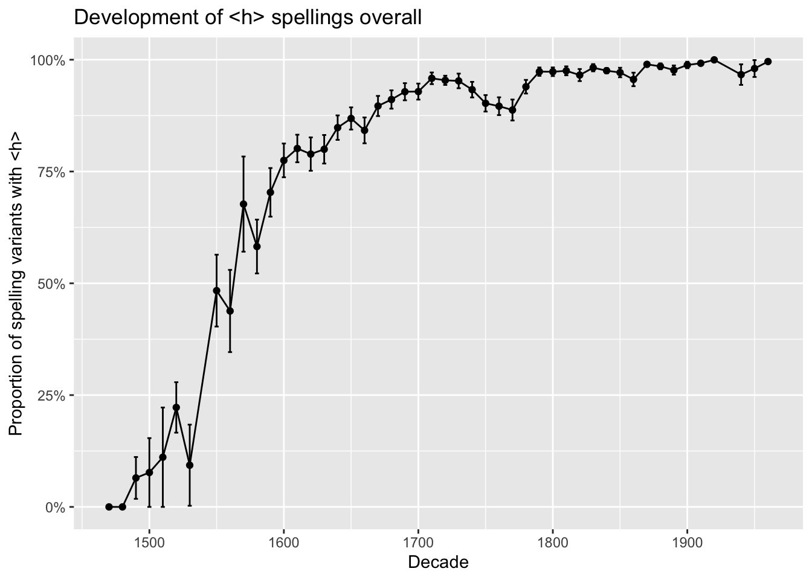
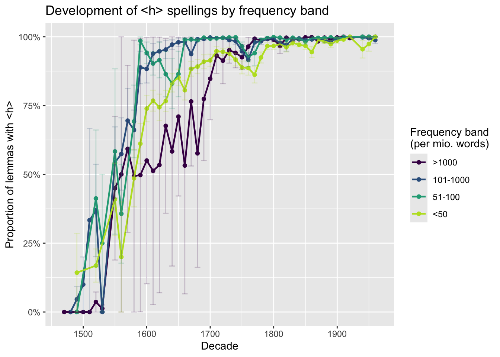
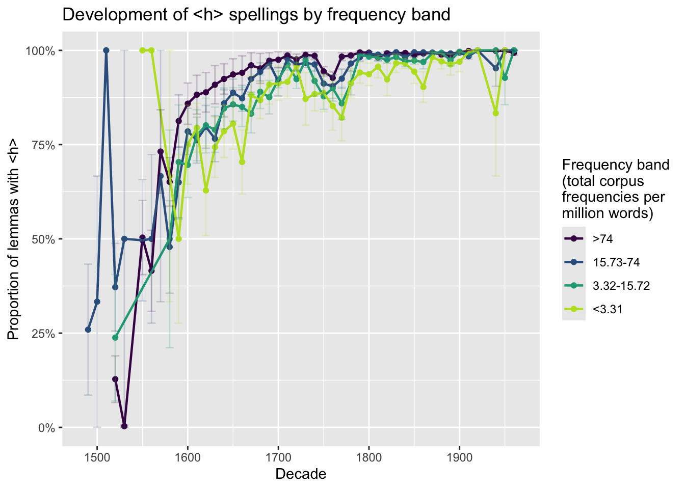
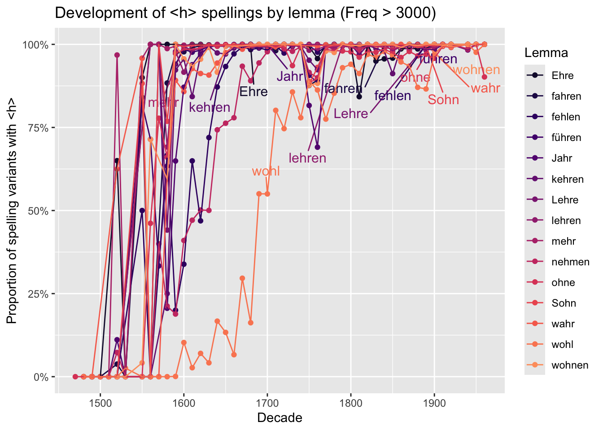

library(tidyverse)
library(scales)
library(patchwork)
library(vroom)
library(ggrepel)<h>-spellings in DTA
To the best of our knowledge, no systematic empirical study exists so far that tackles the development of <h> spellings. As a very first approximation, we conducted a pilot study using the German Text Archive (DTA), extracting all tokens lemmatized with one of the words with a lengthening <h> in present-day German mentioned in the extensive list available in the German Wikipedia entry on that topic. The script below shows the details of our analysis; in the last section (Discussion and conclusion) we will briefly discuss the results more generally.
Preliminaries
Loading some packages:
Data wrangling
This dataframe contains the word forms of all lemmas that are mentioned as containing a “Dehnungs-h” (lengthening
d_lemmas <- read_csv("data/lexeme_mit_h_nach_Wikipedia_wortformen.csv")Rows: 120 Columns: 2
── Column specification ────────────────────────────────────────────────────────
Delimiter: ","
chr (2): lemma, wordforms
ℹ Use `spec()` to retrieve the full column specification for this data.
ℹ Specify the column types or set `show_col_types = FALSE` to quiet this message.This concordance file contains all instances of words lemmatized as a lexeme mentioned in the Wikipedia entry for “Dehnungs-h” in their original spelling. It was compiled by making a CWB concordance searching for the 120 lemmas; the output contains the lemma, the actual original spelling, as well as metadata like year, author, title. Except for year, those are not used in the current pilot study but they will most likely become highly relevant later.
d <- read_lines("data/lexeme_mit_dehnungs_h_laut_wikipedia.txt.zip")We transform d to a dataframe (tibble) and combine both dataframes:
d <- tibble(tx = d)
d1 <- d %>% separate_wider_delim(tx, "><",
names = c("year", "decade", "author", "title", "id"),
too_few = "align_start")
d1 <- d1 %>% separate_wider_delim(id, ">:", names = c("id", "text"))We extract lemmas and word forms from the concordance:
# get lemma & word form
d1$text <- trimws(gsub("[<>]", "", d1$text))
d1 <- d1 %>% separate_wider_delim(text, "/", names = c("word_form", "lemma"),
too_many="merge")This cleans up the metadata columns:
d1$year <- as.numeric(gsub(".* ", "", d1$year))Warning: NAs introduced by coerciond1$decade <- as.numeric(gsub(".* ", "", d1$decade))
d1$author <- gsub("(?<=^).*? ","", d1$author, perl = T)
d1$title <-gsub("^file_title ", "", d1$title)
d1$id <- gsub("^file_id ", "", d1$id)Adding a column that checks whether a form contains an <h>:
# check if word form contains h
d1$with_h <- grepl("h", d1$word_form)The paradigm of nehmen contains word forms that have a short vowel to this day, e.g. 3rd person singular nimmt or the past participle genommen. Forms with <i> and <o> therefore have to be omitted for this lemma.
# for "nehmen", omit forms with i (nimmt, nimmst etc)
# and o (genommen)
d1 <- d1[-which(d1$lemma == "nehmen" & grepl("i", d1$word_form)),]
d1 <- d1[-which(d1$lemma == "nehmen" & grepl("o", d1$word_form)),]We calculate the per-lemma proportion of word forms with <h>:
d_tbl <- d1 %>% group_by(decade, lemma) %>% summarise(
n = n(), # todo: Frequenz pro 1 Mio. Wörter
h = length(which(with_h)),
rel = h / n
)`summarise()` has grouped output by 'decade'. You can override using the
`.groups` argument.We add the frequency per million words. For this, we need the overall corpus size which was again extracted from the CWB installation of DTA2018.
decades <- read_tsv("data/dta_tokens_per_decade.tsv", col_names = c("Total_Freq", "decade"))Rows: 48 Columns: 2
── Column specification ────────────────────────────────────────────────────────
Delimiter: "\t"
dbl (2): Total_Freq, decade
ℹ Use `spec()` to retrieve the full column specification for this data.
ℹ Specify the column types or set `show_col_types = FALSE` to quiet this message.# combine with d_tbl
d_tbl <- left_join(d_tbl, decades, by="decade")
# add Frequency per million words
d_tbl$Freq_pmw <- (d_tbl$n / d_tbl$Total_Freq) * 1e6We add a column specifying, for each word, the frequency across all decades:
# add frequency across all decades
d_tbl_across_decades <- d1 %>% group_by(lemma) %>% summarise(
n_across_decades = n(),
freq_pmw_across_decades = (n_across_decades / sum(decades$Total_Freq))*1e6,
h_across_decades = length(which(with_h)),
rel_across_decades = h_across_decades / n_across_decades
)
d_tbl <- left_join(d_tbl, d_tbl_across_decades)Joining with `by = join_by(lemma)`Results
Helper function for getting standard errors
se <- function(x) sqrt(var(x) / length(x))Proportion of spellings with <h> overall
This plot shows the proportion of <h> spellings overall
(p0 <- d_tbl %>% group_by(decade) %>% summarise(
mean = mean(rel),
se = se(rel),
ymin = mean-se,
ymax = mean+se
) %>% ggplot(aes(x = decade, y = mean)) +
geom_point() + geom_line() +
geom_errorbar(aes(ymin = ymin, ymax = ymax, width = 3)) +
scale_y_continuous(labels = percent) +
ylab("Proportion of spelling variants with <h>") +
xlab("Decade") +
ggtitle("Development of <h> spellings overall"))
Proportion of spellings with <h> across frequency bands
In order to check whether highly-frequent words converge on <h> spellings earlier, we divide the data into different frequency bands; first we use frequency per million words within each decade…
(p1a <- d_tbl %>% mutate(Freq_Band = case_when(Freq_pmw <= 50 ~ "<50",
Freq_pmw > 50 & Freq_pmw <= 100 ~ "51-100",
Freq_pmw > 100 & Freq_pmw <= 1000 ~"101-1000",
Freq_pmw > 1000 ~ ">1000")) %>%
mutate(Freq_Band = factor(Freq_Band, levels = rev(c("<50", "51-100", "101-1000",">1000")))) %>%
group_by(decade, Freq_Band) %>% summarise(
mean = mean(rel),
se = se(rel),
ymin = mean-se,
ymax = mean+se
) %>% ggplot(aes(x = decade, y = mean, col = Freq_Band, group = Freq_Band)) +
geom_point() +
geom_line(lwd=.8) +
geom_errorbar(aes(ymin =
ymin, ymax = ymax,
group = Freq_Band), alpha = .2) +
scale_y_continuous(labels = percent) +
ylab("Proportion of lemmas with <h>") +
xlab("Decade") +
scale_color_viridis_d(end = .9) +
guides(fill = guide_legend(title = "Frequency band")) +
ggtitle("Development of <h> spellings by frequency band") +
guides(col = guide_legend(title = "Frequency band\n(per mio. words)")))`summarise()` has grouped output by 'decade'. You can override using the
`.groups` argument.
… then across decades:
# divide frequency pmw into four quartiles:
quartiles <- quantile(d_tbl$freq_pmw_across_decades) %>% as.numeric()
# plot:
(p1b <- d_tbl %>% mutate(Freq_Band = case_when(freq_pmw_across_decades <= quartiles[2] ~ "<3.31",
freq_pmw_across_decades > quartiles[2] & freq_pmw_across_decades <=quartiles[3] ~ "3.32-15.72",
freq_pmw_across_decades > quartiles[3] & freq_pmw_across_decades <=quartiles[4] ~ "15.73-74",
freq_pmw_across_decades > quartiles[4] ~ ">74")) %>%
mutate(Freq_Band = factor(Freq_Band, levels = rev(c("<3.31", "3.32-15.72", "15.73-74", ">74")))) %>%
group_by(decade, Freq_Band) %>% summarise(
mean = mean(rel),
se = se(rel),
ymin = mean-se,
ymax = mean+se
) %>% filter(mean > 0) %>% ggplot(aes(x = decade, y = mean, col = Freq_Band, group = Freq_Band)) +
geom_point() +
geom_line(lwd=.8) +
geom_errorbar(aes(ymin =
ymin, ymax = ymax,
group = Freq_Band), alpha = .2) +
scale_y_continuous(labels = percent) +
ylab("Proportion of lemmas with <h>") +
xlab("Decade") +
scale_color_viridis_d(end = .9) +
guides(col = guide_legend(title = "Frequency band\n(total corpus\nfrequencies per\nmillion words)")) +
ggtitle("Development of <h> spellings by frequency band"))`summarise()` has grouped output by 'decade'. You can override using the
`.groups` argument.
Proportion of spellings with <h> in high-frequency lemmas
Finally, we check the development of selected lemmas with a stable high frequency.
# which lemmas occur with a stable high frequency?
d_tbl_flipped <- d_tbl %>% select(lemma, Freq_pmw) %>% pivot_wider(names_from = decade, values_from = Freq_pmw)Adding missing grouping variables: `decade`# lemmas with frequency pmw of >15 across all decades in which they are attested (from 1500 onwards)
high_freq_lemmas <- d_tbl_flipped[which(sapply(1:nrow(d_tbl_flipped), function(i) all(na.omit(as.numeric(d_tbl_flipped[i,5:49]))>15))),] %>% select(lemma) %>% unlist() %>% unname()
set.seed(3000) # set a seed because ggrepel package assigns random positions
(p2d <- d_tbl %>% filter(lemma %in% high_freq_lemmas) %>%
mutate(Lemma = ifelse(decade == 1890 & !lemma %in% c("Ehre", "mehr", "kehren", "fahren", "Jahr", "nehmen", "lehren", "wohl"), lemma, "")) %>%
mutate(Lemma = ifelse(lemma == "Ehre" & decade == 1680, "Ehre", Lemma)) %>%
mutate(Lemma = ifelse(lemma == "mehr" & decade == 1600, "mehr", Lemma)) %>%
mutate(Lemma = ifelse(lemma == "kehren" & decade == 1650, "kehren", Lemma)) %>%
mutate(Lemma = ifelse(lemma == "fahren" & decade == 1840, "fahren", Lemma)) %>%
mutate(Lemma = ifelse(lemma == "Jahr" & decade == 1700, "Jahr", Lemma)) %>%
mutate(Lemma = ifelse(lemma == "nehmen" & decade == 1750, "nehmen", Lemma)) %>%
mutate(Lemma = ifelse(lemma == "lehren" & decade == 1790, "lehren", Lemma)) %>%
mutate(Lemma = ifelse(lemma == "wohl" & decade == 1700, "wohl", Lemma)) %>%
ggplot(aes(x = decade, y = rel,
group = lemma, col = lemma)) +
geom_point( ) +
# geom_smooth(method = "loess") +
geom_text_repel(aes(label = Lemma), size = 4, vjust = -2, max.overlaps = 35, show.legend = F) + geom_line() +
scale_color_viridis_d(option = "magma", begin = .1, end = .8) +
scale_y_continuous(labels = percent) +
ylab("Proportion of spelling variants with <h>") +
xlab("Decade") +
ggtitle("Development of <h> spellings by lemma (Freq > 3000)") +
guides(col = guide_legend(title = "Lemma")))Warning: ggrepel: 1 unlabeled data points (too many overlaps). Consider
increasing max.overlaps
Discussion and conclusion
While this pilot analysis is clearly preliminary and error-prone, it does allow for gaining a first impression of how the use of lengthening <h> develops. Looking at the Proportion of spellings with <h> overall, it becomes clear that the use of silent <h> is largely stable from about the beginning of the 18th century onwards. Before that, there is a steep increase in the use of <h> variants, but also considerable variation, as shown by the large error bars (which indicate the standard error of the mean). The middle panel shows the development of <h> spellings for four different frequency bands. Interestingly, it does not seem to be the case that a stable spelling with <h> is established earlier for the highest-frequency words than for lower-frequency words, as the distribution of spelling variants across frequency bands shows (Proportion of spellings with <h> across frequency bands); instead, there seems to be much lexeme specificity, as the figure showing variation in high-frequency lemmas (Proportion of spellings with <h> in high-frequency lemmas) indicates.
Note that in the case of wohl (roughly corresponding to ‘well’; quite similar to its English equivalent, it is nowadays mostly used as a discourse marker), the spelling variation between <h> and non-<h> variants also reflects phonological lengthening (/wɔl/ > /voːl/), similar to the past tense variants of nehmen ‘take’ (e.g. 3rd person singular nam /nam/ > nahm /na:m/).